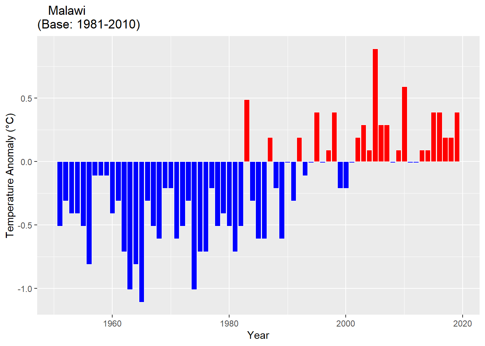

Chapter 4 Vulnerability And Adaptation Options
- This chapter provides a comprehensive vulnerability assessment of the country to the impacts of climate change and draws short – to long-term implications for national adaptation planning. The vulnerability assessment employs a systems approach by combining analyses from different sector vulnerability assessment to examine the nexus between and among the different sectors.
4.1 Malawi’s Historical Trends And Projected Future Climate
- Historical Trends: The historical climate in Malawi has been described in many documentations with limited differences among the documents. There is a near-total agreement that vast surface water of Lake Malawi tends to have a cooling effect on the margins of the lake, where long, hot seasons with high humidity occur, along with mean annual temperatures of 24°C.
- Mean annual temperature has increased by 0.9°C between 1960 and 2006, an average rate of 0.21°C per decade. This increase in temperature has been most rapid in the rainy summer (December to February) and lowest in the hottest season (September to November).
- The average number of ‘hot’ days per year in Malawi has increased by 30 between 1960 and 2003.
- The average number of ‘cold’ days per year has decreased by 16 between 1960 and 2003.
4.1.1 Temperature Anomaly

4.1.2 Rainfall Anomaly
- Projected future climate: Projections of temperature and rainfall for Malawi was done using statistically downscaled General Circulation Models (GCMs), following the procedure recommended by the Fifth Assessment Report (AR5) of the IPCC in 2013. It is worth noting that AR5 is premised on two Representative Concentration Pathways (RCPs) of GHG emissions, namely: RCP 4.5 (Intermediate Emission) and RCP 8.5 (High Emission)15. RCP 4.5 and 8.5 are respectively equivalent to story lines B1 and A1F1 in the AR4 of the IPCC (2007) as shown in Table 3.3.1. AR4 is commonly referred to as the Special Report on Emission Scenarios (SRES). RCP 8.5 or Scenario A1F1 is consistent with the following conditions: (a) three times today’s CO2 emissions by 2100; (b) rapid increase in methane emissions; (c) increased use of croplands and grassland driven by an increase in population growth; (d) a world population of 12 billion by 2100; (e) lower rate of technology development; (f) heavy reliance on fossil fuels; (g) high energy intensity; and (h) no implementation of climate change policies. RCP 4.5, which is comparable to SRES B1 scenario is consistent with the following conditions: (a) lower energy intensity; strong reforestation programmes; (b) decreasing use of croplands and grasslands due to yield increases and dietary changes; (c) stringent climate policies; (d) stable methane emissions; and (e) CO2 emissions increase only slightly before decline commences around the year 2040.
Temperature
4.1.2.1 ssp245
Fig. 4a. Mean temperature change (C) for Malawi for 2020 – 2040 compared to reference period 1971 – 2000 for the medium emissions scenario (ssp245). BCC-CSM2-MR Model
Fig. xx Mean temperature change (C) for Northern Malawi for 2021 – 2040 compared to reference period 1971 – 2000 for the medium emissions scenario (ssp245). BCC-CSM2-MR Model

Fig. xx Mean temperature change (C) for Central Malawi for 2021 – 2040 compared to reference period 1971 – 2000 for the medium emissions scenario (ssp245). BCC-CSM2-MR Model
Fig. xx Mean temperature change (C) for Southern Malawi for 2021 – 2040 compared to reference period 1971 – 2000 for the medium emissions scenario (ssp245). BCC-CSM2-MR Model
Fig. xx Mean temperature change (C) for the Area under National Administration for 2021 – 2040 compared to reference period 1971 – 2000 for the medium emissions scenario (ssp245). BCC-CSM2-MR Model
4.1.2.2 ssp585
Fig. 4a. Mean temperature change (C) for Malawi for 2021 – 2040 compared to reference period 1971 – 2000 for the high emissions scenario (ssp585). BCC-CSM2-MR Model

Fig. xx Mean temperature change (C) for Northern Malawi for 2021 – 2040 compared to reference period 1971 – 2000 for the high emissions scenario (ssp585). BCC-CSM2-MR Model
Fig. xx Mean temperature change (C) for Central Malawi for 2021 – 2040 compared to reference period 1971 – 2000 for the high emissions scenario (ssp585). BCC-CSM2-MR Model
Fig. xx Mean temperature change (C) for Southern Malawi for 2021 – 2040 compared to reference period 1971 – 2000 for the high emissions scenario (ssp585). BCC-CSM2-MR Model
Fig. xx Mean temperature change (C) for the Area under National Administration for 2021 – 2040 compared to reference period 1971 – 2000 for the high emissions scenario (ssp585). BCC-CSM2-MR Model
Rainfall
4.1.2.3 ssp245
Fig. 4a. Mean Precipitation change (C) for Malawi for 2021 – 2040 compared to reference period 1971 – 2000 for the medium emissions scenario (ssp245). BCC-CSM2-MR Model
Fig. 4a. Mean Precipitation change (C) for Northern Malawi for 2021 – 2040 compared to reference period 1971 – 2000 for the medium emissions scenario (ssp245). BCC-CSM2-MR Model
Fig. 4a. Mean Precipitation change (C) for Central Malawi for 2021 – 2040 compared to reference period 1971 – 2000 for the medium emissions scenario (ssp245). BCC-CSM2-MR Model
Fig. 4a. Mean Precipitation change (C) for Southern Malawi for 2021 – 2040 compared to reference period 1971 – 2000 for the medium emissions scenario (ssp245). BCC-CSM2-MR Model
Fig. 4a. Mean Precipitation change (C) for the Area under National Administration for 2021 – 2040 compared to reference period 1971 – 2000 for the medium emissions scenario (ssp245). BCC-CSM2-MR Model
4.1.2.4 ssp585
Fig. 4a. Mean Precipitation change (C) for Malawi for 2021 – 2040 compared to reference period 1971 – 2000 for the high emissions scenario (ssp585). BCC-CSM2-MR Model
Fig. 4a. Mean Precipitation change (C) for Northern Malawi for 2021 – 2040 compared to reference period 1971 – 2000 for the high emissions scenario (ssp585). BCC-CSM2-MR Model
Fig. 4a. Mean Precipitation change (C) for Central Malawi for 2021 – 2040 compared to reference period 1971 – 2000 for the high emissions scenario (ssp585). BCC-CSM2-MR Model
Fig. 4a. Mean Precipitation change (C) for Southern Malawi for 2021 – 2040 compared to reference period 1971 – 2000 for the high emissions scenario (ssp585). BCC-CSM2-MR Model
Fig. 4a. Mean Precipitation change (C) for the Area under National Administration for 2021 – 2040 compared to reference period 1971 – 2000 for the high emissions scenario (ssp585). BCC-CSM2-MR Model
- The following conclusions may be drawn from climate change scenario analysis results presented in Tables 3.3.2 and 3.3.3 about future expected temperature and rainfall regimes in Malawi using the two RCPs: (a) there is a positive trend in temperature rise, i.e., there will be an increase in temperature in Malawi with climate change; (b) minimum temperatures exhibit a faster rise in temperature with climate change than maximum temperatures; (c) generally, there is an insignificant decrease in rainfall during the October-December period, and an increase during January-March period; (d) future temperatures will rise by 1.3o C to 2.6o C; and (e) El Nino conditions will likely increase climate extremes, resulting in the increased severity, or magnitude/intensity, and frequency of floods, droughts and strong winds16
4.2 Vulnerability, Impacts and Risks of Key Systems
- We employ a systems approach (a) to understand the interactions between water, energy and food systems and links with human resources in a national context, and b) to evaluate the system’s vulnerability to the impacts of climate change.
4.2.1 The Water – Energy – Food System
- This section explores vulnerability and opportunities for the WEF in promoting cross-sectoral policy linkages among water, energy, and food sectors at national level to achieve sectoral integration and sustainable development. The assessment provides an appraisal of the country’s WEF resource endowment, climate change impacts, and policy and institutional arrangements. We further propose a country nexus framework for implementing the WEF nexus, as well as possible tools for monitoring and evaluating WEF nexus implementation.
Figure 7 – The Water-Energy-Food System vulnerability Assessment Conceptual Framework
Key Findings on the WEF Nexus
Our assessment indicates reveals that Water, Energy and Food subsystems in Malawi are strongly interactive, complex and dynamic. Unfortunately, their challenges have been tackled in isolation from one another. Importantly, they exist within a wider context of transformational processes – or drivers of change – such as population growth, climate change and urbanization that need to be taken into account (Fig 7).
A systemic description of the water resources can be categorized in three major components – water supply, water treatment, water collection and surface water management. Malawi relies on both surface- and ground-water sources, with an extensive river system covering 20 percent of the country’s surface area, comprising the Shire, Ruo, Bua, Rukuru, and Songwe Rivers, and numerous lakes such as Malawi, Chilwa, Chiuta, and Malombe. Lake Malawi plays a particularly important role in surface-water supply in the socio-economic development of the country.
Water resource distribution exhibits dramatic spatiotemporal variation. Approximately, 90 percent of the runoff in major rivers occurs between December and June. Agriculture/irrigation is one of the major water-withdrawing sectors. Water withdrawal for agricultural and municipal purposes has concurrently risen owing to population growth.
Malawi is water stressed and the per capita water availability continues to decline due to human population growth especially in the urban and peri urban areas (World Bank, 2007). However, in the past decades Malawi has made significant progress in increasing water supply coverage. In 2015 it surpassed its Millennium Development Goal water supply target. In 2014 over 80% of people had access to improved water sources within a distance of 200m for urban and 500m for rural areas and 93% had ana average time to collect drinking water (return trip) of less than 30 minutes (MoIWD, 2014).
In 2015 WHO/UNICEF Joint monitoring Programme (JMP) estimated that coverage for improved water supply was 90% nationally; 89% in rural areas and 96% in urban areas (WHO/UNICEF, 2015). In rural areas water source options include piped water and community hand pumps as well as household point of -use water treatment (Holm et al 2016). Nevertheless, water supply is being affected by climate change as evidenced by the increased frequency of droughts and floods (Pauw et al 2010; Chidanti-Malunga et al., 2011). However, the water supply services in the country experiences several challenges which makes water access in the country not equitable. One of the main challenges is the low functionality of the rural water supply services; with an estimate of about 25% water points not working at a given time (MoIWD, 2014). Impacts of Climate Change on Water Resources Frequent floods and droughts are the most severe effects of climate change in Malawi which highly impact the water system. Apart from causing the lack of access to water supply, drought derails the economic progress for communities.
Sector | Observed climate impacts | Global impact rating | National impact rating | Confidence rating | Data quality rating | Time period | Source |
FOOD SYSTEM | Low-High | Low- High | High | Low | 1992-2017 | ||
Crops | Medium-High | Medium-High | Medium- High | Low | 1992-2017 | ||
Reduced crop yield associated with heat and drought stress. | |||||||
Changes in crop suitability due to shifts in agroecological zones. | |||||||
Economic losses due to severe reductions in crop yields caused by frequent floods and droughts. | |||||||
Livestock | Increased animal mortality associated with intense heat, frequent droughts and floods. | Low- Medium | Low-Medium | Low | Low | 1992-2017 |
Drought periodically occurs, and the 2001 drought resulted in crop output decline by a third. Maize operation equivalent to 3% of GDP in fiscal year 2002/03 budget declined. In 1992 severe drought occurred which hit the country, 67% decline in maize output was experienced compared with previous year. The country experienced heavy floods in 2015 followed by drought. Alternating between drought and floods gives high rating on the impacts but medium impact for individual event. The pattern of maize is not currently resilient to the current climate and high levels of climate variability. However, evidence does not reveal consistent decreases (Figure 1.1).
On the other hand, tea the second largest export crop, decreased by 23%, cotton and Sugar production fell by 54% and 21% respectively. Agriculture, which accounts for 28% of GDP, contracted by an estimated 2%, on the back of a 1.6% decline in 2015 (Bhatia and Mwanakatwe, 2017). This explains the rating of the impact as medium high as most cash crops are affected.
The average temperature in Malawi ranges from 8°C in the northern highlands to 38 °C in the lowland regions around Lake Malawi and the Lower Shire Valley (Nhamo et al., 2019). Since the 1960s, Malawi has recorded an annual mean temperature rise of 0.9°C (Parrish et al., 2020). Analysed data from 1960 to 2007 showed increasing drought frequency and intensity and the variability of rainfall, contributing to regional (SADC) insecurity of food and water (Godwell Nhamo & Muchuru, 2019). Malawi suffered seven severe droughts and 19 floods between 1967 and 2014 that adversely affected smallholders’ production and food security (Haug & Wold, 2017). As a result, trends in people in need of food assistance (Figure 1) have increased between 2012 and 2016 (Haug & Wold, 2017).

Figure XX: Trends in people in need of food assistance
WATER | ...2 | High...3 | High...4 | Medium-High...5 | Medium-High...6 | 1992-2018 | 3 |
Water supply | Water quantity and quality disrupted by increasing frequency of droughts and floods. | High | High | High | Low | 1992-2018 | |
Water treatment | Increased sediment, nutrient, and pollutant loadings from heavy rainfall and floods and droughts. | High | High | High | Low | 1992-2018 | |
Water collection | Damage to water infrastructure and contaminated ground and surface water sources | High | High | High | Low | 1992-2018 | |
Surface water management | Increased frequency and magnitude of floods associated with torrential rains. | High | High | High | Low | 1992-2018 | |
Reduction in waterflow in major rivers of the country due to reduction in rainfall | |||||||
ENERGY | Reduction in hydropower generation through changes in the mean annual streamflow and shifts of seasonal flows. | High | High | High | High | 1992-2017 |
Projected future climate A significant amount of work has been carried out in Malawi in terms of projected climate changes. The Country Climate Brief by Future Climate for Africa (October 2017) provides downscaled predictions of useful future climate changes for Malawi (Mittal et al, 2017). It is interesting to note that 34 different Global Climate Change Models (GCMs) were used in the analysis and a wide spread of results was obtained. (Figure 4-5 and Figure 4-6).
Figure 4-5: Predicted per cent change in annual mean rainfall for all Malawi
Note: The predicted change is between the GCM simulated current period (1976-2005) and 2070-2099 for 34 GCMs. Figure 4-5 shows a change in mean annual precipitation ranging between a decrease of 17 mm per annum to an increase of 28 mm. However, although there will only be relatively small changes in annual precipitation, the distribution of the rainfall events will change with higher concentrations of rain separated by longer dry periods (FAO, 2017).
Figure 4-6: Change in annual mean temperature (°C)
Note: The predicted change is between the GCM simulated current period (1976- 2005) and 2070-99 for 34 GCMs.
Figure 4-6 shows an increase in annual mean temperature in the years 2070 to 2099 compared with the years 1976-2005 ranging between 2.5 and 5.3C. Similar work by Warnatzsch & Reay (2019) indicates that current models can reasonably accurately project temperature trends but are not accurate for precipitation as shown in Figure 4-5. Regional Climate Models (RCMs) are suggested for more definitive and accurate modelling considering local topographic features and conditions. Future planners will thus need to consider a range of future precipitation scenarios. However, they conclude that model improvements would allow for better impact assessment and adaptation planning. It is also predicted that the number of days with a maximum temperature higher than 30C will increase from 10 to 100 days per year by 2040 (FCFA, 2017). In most cases it is projected that the form of precipitation, whether increasing or decreasing will change to more frequent extreme (shock) events with longer dry spells between them. An increase in the number of cyclonic events affecting south eastern Malawi can also be expected. Issues such as increased temperatures will affect barometric pressures over the land and water masses in most countries leading to increased windiness (both velocities and duration). Other issues such as groundwater level changes are the result of a combination of changes in temperature and precipitation, together with changes in drainage characteristics and land-cover (and hence infiltration into the ground) that are likely to result from the general climate changes.
Impacts, Vulnerabilities and Risks
Figure 8 – Average Annual Natural Hazard Occurrence for 1900-2018.